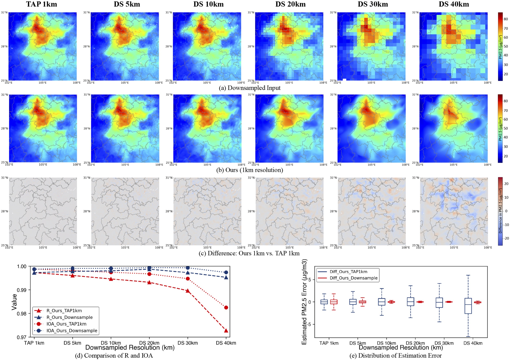

Adaptive High-Resolution Mapping on TAP
Reconstruction of PM2.5 distribution in central China.
In (a), the TAP PM2.5 distribution within China is illustrated at a resolution of 10 km on November 3rd, 2023.
For panels (b), (c), and (d), the upper images depict the TAP PM2.5 distribution in Central China,
Hubei Province, and Wuhan City, respectively, at a 10 km resolution.
The lower images provide detailed patterns of the estimated PM2.5 distribution in the corresponding areas
of Central China, Hubei Province, and Wuhan City.
Assessment of HF-SDF for ultra-high resolution mapping from sparse observations.
In (a), the PM2.5 distribution around the Sichuan Basin from the TAP 1km dataset was downscaled at various scales, where DS 5km, DS 10km, DS 20km, DS 30km, DS 40km illustrate downsampled inputs at resolutions of 5km, 10km, 20km, 30km, and 40km, respectively. Panel (b) illustrates our reconstruction results at a resolution of 1km, inferred from TAP 1km, DS 5km, DS 10km, DS 20km, DS 30km, and DS 40km, respectively. Panel (c) illustrates the difference between our 1km resolution reconstructions and the data from TAP 1km. Chart (d) shows two groups of R and IOA: Ours 1km vs. TAP 1km and Ours vs. Downsampled Input. Chart (e) illustrates two groups of distribution of reconstruction error: Ours 1km vs. TAP 1km and Ours vs. Downsampled Input.

High-resolution air pollution mapping with varying unmeasured areas.
Panels (a) to (e) show reconstruction outcomes for maps with unmeasured areas
of radii 0.05°, 0.15°, 0.25°, 0.35°, and 0.45° respectively.
GAP1 to GAP5 denote these unmeasured areas. Each panel displays (left to right): the input map, high-resolution output, complete map (GT), and bias visualization (CDF). See Supporting Information Appendix B.3 for more details.
We utilize the coded map network to evaluate the generalization capability of HF-SDF within trained regions, as well as its transferability to entirely unseen locations and different air pollutants.
Details regarding the dataset used for model training and testing, as well as model performance, are summarized in Table 1.
The training set comprises PM2.5 data (TAP) collected from 2021 to 2022 in six locations: Chengdu (CD), Bazhou (BZ), Taiyuan (TY), Changsha (CS), Xining (XN), and Longnan (LN), each covering a geographic area of 10° × 10°. For additional details, refer to the Supporting Information (Table S7). To address concerns of homogeneity, the training dataset includes 1080 instances of concentration maps, randomly sampled from 180 days between 2021 and 2022 for each location.
Subsequently, test sets, which include different regions, times, and air pollutants, were utilized to assess the model's generalization capability and transferability.